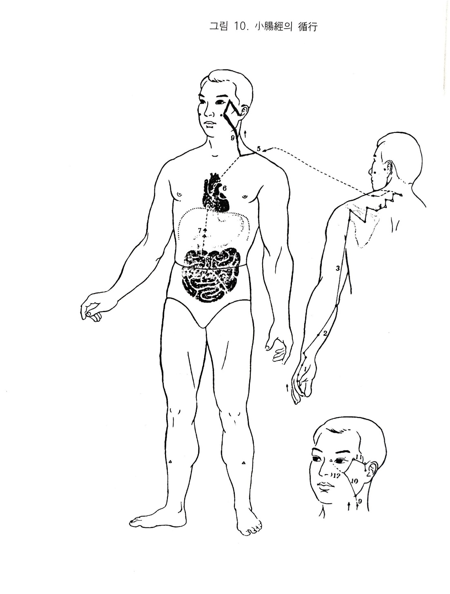

수태양소장경
4. 수태양소장경
1) 수태양소장경의 순행
소장경은 심경의 소충에서 분지된 것을 소지외첨.소택에서 받아 시작된다. 장측과 배측의 경계를 따라 수근부로 상행하여 완골.양곡을 지나 전완.상완의 외측후연으로 다시 상행하야 견관절의 배면으로 나와 견갑극을 지나 독맥의 대추와 교회한다. 다시 앞으로 나와 위경의 결분과 교차되어 체공으로 깊이 들어가 단중에서 심장과 연락되고, 식도를 따라 횡격막을 통과하여 위부에 이르러 하완에서 소장에 속한다.
그 지맥은 결분에서 경부를 따라 상행하여 협부를 지나 외자인 동자료에서 담경과 교회하고 이중으로들어가 청궁에서 끝난다. 또 다른 지맥은 협부에서 갈라져 내자의 청명에서 방광경과 교회하고 횡으로 비스듬히 운행하여 협골부에 분포된다.
2) 소장경의 병증
(1) 소화기계
소장경이 견부에서 위경의 결분으로 나와 단중-식도-위-하완-속소장하여 위와 밀접한 연관이 있다.
소장은 위하구에서 소화되어 내려오는 것 중에서 맑은 수분과 탁한 찌꺼기를 갈리 배설시키니 이 기능이 허냉하고 실조되면 소화되지 않고 배에서 꾸르륵 꾸르륵 소리가 나며 설사하고 이질도 생긴다. 만일 실열이 있으면 장만하고 습열도 목황이 되며 또한 장통하면서 변불통한다.
(2) 흉협복통계
소장이 소복의 안쪽에 있고 뒤로 요척이 붙어 있으며 아래로 고환에 이어져 있으니 병사가 침입하면 요척에서 고환으로 당기면서 아프고 배꼽주위와 아랫배가 아픈데 이것이 곧 산기라고 한다.
(3) 운동기계
소장경이 소지외첨에서 시작하여 수근부를 상행하고 전완.상완을 상행하여 견관절의 배부로 나와 대추로 해서 결분에서 경부로 올라가니 그 선상에 병사가 있으면 소지와 주내측 소해 주위관절이 아프고 견배 및 액후의 견정.요유.천종과 목까지 아프게 된다. 이 경락이 뺨과 광대뼈 밑을 통과하니 이 언저리에 통증이 온다. 팔마디가 이완되거나 상박.견비외측통 등이 온다.
(4) 안이비인후구계
소장경이 관골하의 관료에서 청궁까지 이어져 있으니 병이 들면 이전열이 있고 통증이 있으며 이롱.이명이 생긴다.
소장경이 경부를 통과하고 심.소장이 표리 관계로서 화에 속하므로 실열이 있으면 익통.구갈.구창한다.
(5) 비뇨기계
소장은 수성지궁이며, 소화되어 내려온 것 중에 맑은 것은 수분으로 탁한 것은 조박으로 갈라 선통하는데 그 기능이 실조되면 수분대사가 잘 되지 않아 소변이 잘 나오지 않고 소변을 보고 나서 아프며 적백탁의 앙금이 가라앉고 실열에는 요폐된다.
(6) 생식기계
심경에는 오장의 경락이 다 연결되어 있고 심은 군주지궁이다. 심.소장은 표리관계이므로 이것이 약해지면 신허되어 성욕이 헛되이 동하고 유정하며 여자는 적백대하가 생긴다.
(7) 정신계
심.소장은 신은 간직하니 병사가 오면 기가 상역하여 두통이 오고, 혈맥을 주관하니 실열로 몸이 무거워진다.
(8) 기타
소장경의 결분에서 견중유-천돌-관료에 이르기까지 경협함을 거치니 뺨.볼이 붓고 아프며 혈액과 수분의 순환이 잘 되지 않아 혹이 생긴다.

오수혈
소택(정,금)
새끼손가락 손톱의 뿌리 부분 구부러진 각이 된 곳에서 옆으로 1푼 떨어진 곳이다. 두통. 편도선염 등의 발열이나 뇌충혈(고혈압)시 뒷목이 뻣뻣한 경우, 기침이나 어린이의 경기 등에도 쓰여지지만 빈혈이나 형세 등의 경우, 가슴이 답답하고 상기되거나 어지러운 때, 심장부에 통증이 오거나 가슴이 뛰는 등의 심계항진. 협심증 등 급증에는 자침도 좋지만 사혈하는 편이 더욱 효과적이다.
또한 유동시에는 소택, 단중, 천종만으로도 잘 들으며 이 곳을 자극하여 심장의 변동, 정신적인 안정이 되는 것을 보면 심소장이 같은 군화인 오행관계와 경락의 실재를 보여주는 좋은 증거라 생각되는 것이다. 이 혈은 화경의 금(대장)혈이므로 대장의 영향으로 소장경에 이변이 있을 때(미사 라 함) 또는 대.소장에 같이 병이 있을 때에도 쓰이는 혈이다.
전곡(형,수)
새끼손가락 바깥쪽을 눌러 올라가면 본관절의 조금 앞에 걸리는 뼈가 있다. 이 곳이 제5지본절의 외측 전함중으로 전곡혈인데 일설에는 둘째 마디의 바깥쪽 주름살 끝을 전곡으로 보기도 한다. 귀나 코 목 등에 열이 있고 붓는 경우, 팔이 붓고 아프거나 부인들의 유즙부족에도 좋다. 오행침법상으로는 형 수혈 즉 화(소장)경중의 수(방광)혈이기 때문에 방광경과 소장경과에 같이 이상이 있거나
방광기능상의 이상으로 소장에 병고가 생겼을 경우(실사)에 쓰이는 혈이다.
후계(수,목)
손바닥의 바깥쪽 변두리를 손목쪽에서 새끼손가락을 향하여 밀어가면 관절부분에 뼈에 걸리는 골함중이 후계혈이니 주먹을 가볍게 쥐고 침을 놓는다. 이 혈을 흔히 쓸 수 있는 것은 눈다락지와 어깨 아픈데 많이 쓰인다. 눈. 귀. 콧병에 좋은 자리이며 뒷목이 뻣뻣하고 아픈데에도 좋다. 고래로 정신경치료시 기본혈 이외에 간사. 후계혈을 거의 쓰고 있다. 그것은 이 혈이 정신의 안정에 작용하기 때문이며
연유인 즉 화(소장)경의 목(담)혈로서 허즉보기모의 이치로 소장(심)허증에 보하는 혈인 것이다. 견비통을 소장경의 영역으로 보아 후계. 족임읍을 보하고 소장모혈인 관원의 유침이 유효한 것읻든가 관절류마티스가 소장의 열에서 화생된다는 설을 인용하여 후계를 보하는 방식 또한 효과적이다.
양곡(경,화)
손등을 위로 하여 손목의 바깥쪽을 보면 척골경상돌기라고 하는 뼈의 돌기가 있다. 그 돌기부의 전. 외측을 누르면 척골과 손등 뼈의 관절함중(뼈짬)이 만져진다. 그 곳이 양곡혈이니 침은 옆에서 손목쪽으로 놓는다. 화경중의 화혈이기 때문에 위의 허증에 해계(위경중의 화혈)과 같이 보하는 혈(화생토의 원리)도 되지만 심. 소장질환, 정신계이상, 신경성인 증후, 신열이 있을 때 해열도 되며
하복냉증 등에 온기를 회복시키는 작용도 있다. 기타 두통, 어지러움, 귀의 이상, 입병, 혀가 굳는 경우 등 다양하게 응용할 수 있는 혈이다.
소해(합,토)
손바닥이 안면을 향하도록 해서 팔을 반굴하고 팔꿈치 끝에서 안쪽을 만져보면 뾰족한 돌기가 만져진다. 그것이 상완골의 내상과인데 이 내상과와 팔꿈치 사이의 함중이 소해혈이고 내상과의 안쪽 함중은 수소음심경의 소해(합수)혈이다. 소해혈은 화(소장)경중의 토(위)혈이기 때문에 소장이 실했을 때 사하는 혈이고 또는 소장과 위가 같이 나빳을 때 쓰인다. 합토혈인 관계상 목. 어깨. 팔 등이 아플때
침끝이 어깨쪽을 향하도록 와사(피하에 뉘어서 꽂는다)함이 좋다. 기타 한열, 장이 나빠서 아랫배가 아픈때, 귀나 턱의 이상에도 좋은 혈이다.